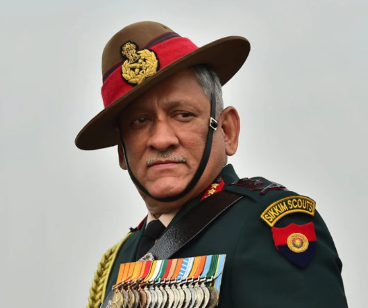

CDS General Bipin Rawat

General officer
After promotion to Major General, Rawat took over as the General Officer Commanding 19th Infantry Division (Uri). As a Lieutenant General, he commanded III Corps, headquartered in Dimapur, before taking over the Southern Command in Pune.[23][24]
He also held staff assignments which included an instructional tenure at the Indian Military Academy (Dehradun), General Staff Officer Grade 2 at the Military Operations Directorate, logistics staff officer of a Re-organised Army Plains Infantry Division (RAPID) in Central India, Colonel Military Secretary and Deputy Military Secretary in the Military Secretary’s Branch and Senior Instructor in the Junior Command Wing. He also served as the Major General General Staff (MGGS) of the Eastern Command.[23][24]
2015 Myanmar strikes
In June 2015, eighteen Indian soldiers were killed in an ambush by militants belonging to the United Liberation Front of Western South East Asia (UNLFW) in Manipur. The Indian Army responded with cross-border strikes in which units of the 21st battalion of the Parachute Regiment struck an NSCN-K base in Myanmar. 21 Para was under the operational control of the Dimapur based III Corps, which was then commanded by Rawat.[15][25]
Southern Army Commander
After being promoted to the Army Commander grade, Rawat assumed the post of General Officer Commanding-in-Chief (GOC-in-C) Southern Command on 1 January 2016. After a short stint, he assumed the post of Vice Chief of the Army Staff on 1 September 2016.
Home